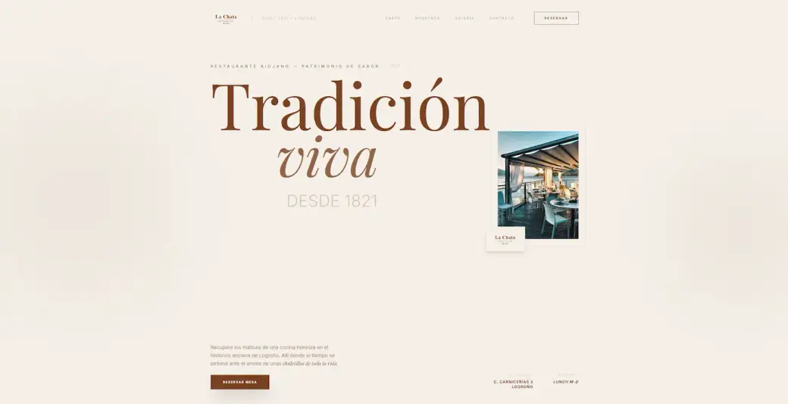
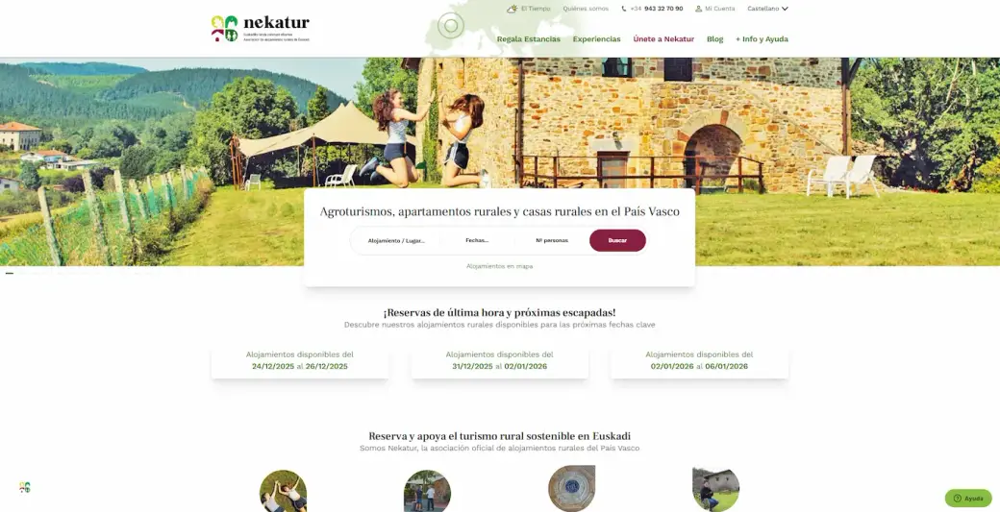

Cómo plantearía un sistema de diseño para una web pequeña
Una guía práctica para definir componentes, patrones y decisiones visuales sin sobredimensionar el proyecto.
Frontend, diseño y sistemas web desde la práctica. Aprendizajes, decisiones técnicas y experimentos que voy documentando mientras construyo productos web.
Una guía práctica para definir componentes, patrones y decisiones visuales sin sobredimensionar el proyecto.

Patrones para componer interfaces sin acoplarte al CMS de turno, y cuándo extraer cada cosa a su propio archivo.

Errores, atajos útiles y decisiones que rentaron a la hora de mantenerlo a lo largo del tiempo.
Cuándo elegir HTML + un poco de JS y por qué importa para los usuarios y para tu cordura.
Este blog es mi espacio para documentar aprendizajes, decisiones técnicas y experimentos relacionados con frontend, diseño de interfaces y desarrollo web. No pretende ser una documentación perfecta, sino una colección de notas útiles desde la práctica.
Llegará una vez aprobemos el sistema de la Home. Mantendrá la rejilla de 2 columnas con cover, filtros por categoría (funcionales, en JS) y paginación.
Volver a la Home ←Variante con cover 21:9 + título centrado + TOC sticky a la izquierda. Bloques de código, callouts, citas, tabla y artículos relacionados.
Volver a la Home ←2 columnas: sidebar con tu perfil, enlaces y RSS; columna principal con manifesto + preguntas frecuentes + CTA.
Volver a la Home ←